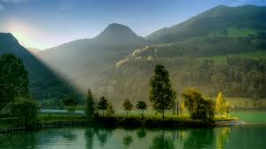

|  |
| HOME | ABOUT US | CONTACT US | FEEDBACK | LOGIN | REGISTER |
|---|
We provide all the Tourist places related to all the age groups.We do the research and go the extra mile to make sure our information is accurate, up-to-date, approved by our team of tourist experts and travellers.
Places of natural beauty such as beaches, tropical island resorts, national parks, mountains, deserts and forests, are examples of traditional tourist attractions which people may visit.
Tourists expectations when visiting a particular place are related to several features of the chosen destination:culture, architecture, gastronomy, infrastructure, landscape, events, shopping, etc. These features attract people to the destination and contribute to the overall experience of the trip. The ultimate primary purpose of attractions is to attract the customer's attention so that they can come to a specific location and explore the various attractions on vacation. In the travel and tourism industry, attractions therefore play a particularly important role as this attracts tourists from all over the world.
People love us because we help them easily to find tourist places, enjoy their travel with their friends, family and some people love to travel solo trips. Every one feel happy when following the Tourist Attraction website.
Tourist attractions are also created to capitalize on legends such as a supposed UFO crash site near Roswell, New Mexico and the alleged Loch Ness monster sightings in Scotland. Ethnic communities may become tourist attractions, such as Chinatowns in the United States and the black British neighborhood of Brixton in London, England. Tourists also look for special local culinary experiences such as street kitchens in Asian metropolises or the coffeehouse culture in Central Europe. In particular, cultural property and the individual places of the UNESCO World Heritage Site have developed into tourist attractions. If too many tourists frequent individual places, this can lead to environmental pollution and resistance from the local population, such as in Barcelona or Venice. With regard to this whole subject, there are already lists of destinations that are not recommended to tourists.
Tourist Attraction want to provide good information regarding the places in India. where it shows the top five best places in each state without charge. All of the places are widely known by the people.
| Quick Links | Follow Us | Contact | Search |
|---|---|---|---|
|
|
|